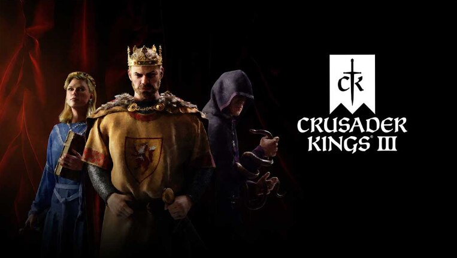
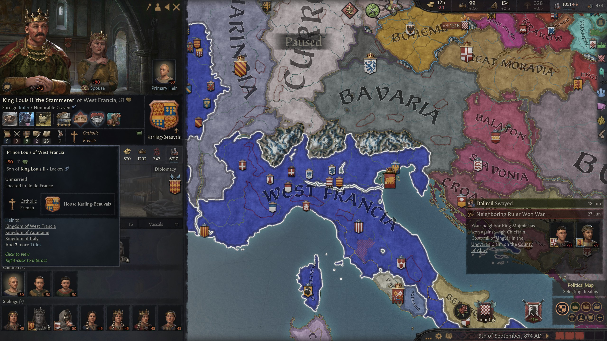
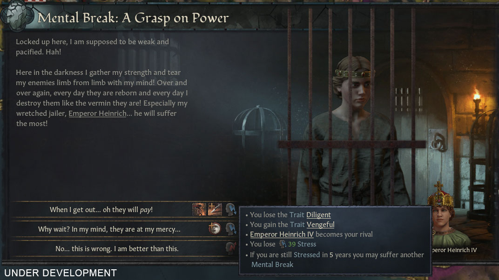
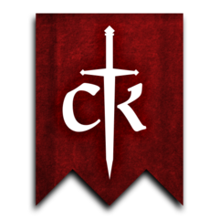
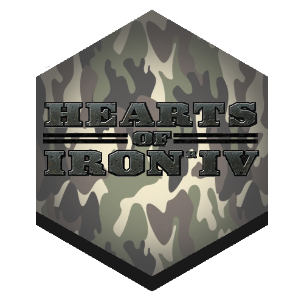
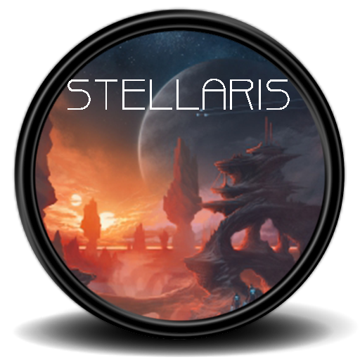

Kto to jest Paradox Interactive
Paradox Interactive AB to szwedzki wydawca gier wideo z siedzibą w Sztokholmie. Paradox jest najlepiej znany z wydawania gier strategicznych z tematyką historyczną, zwłaszcza gier typu grand strategy, i wydał gry strategiczne w różnych środowiskach, a także gry innych gatunków, takie jak gry fabularne i symulatory zarządzania. Zazwyczaj kontynuują rozwijanie swoich gier po początkowej premierze, tworząc dodatki do pobrania, i są również znani z tworzenia gier łatwych do modyfikacji.
Strategie grand strategy Paradox, które grałem (posortowane według daty rozpoczęcia gry)
Crusader Kings 3
-
  
Crusader Kings III to grand strategy z elementami gry fabularnej osadzonej w średniowieczu. Gra rozpoczyna się w 867 roku i zazwyczaj kończy w XV wieku. Gra świetnie ukazuje świat średniowieczny, przedstawiając funkcjonowanie feudalizmu i dyplomację. Jest to jedna z najbardziej chaotycznych gier na liście z powodu losowości działań postaci niezależnych (NPC), ale to tylko czyni grę bardziej grywalną.
Europa Universalis 4
-


Europa Universalis IV to gra strategiczna, w której gracze mogą kontrolować naród od późnego średniowiecza do wczesnej nowożytnej epoki, prowadząc handel, administrację, dyplomację, kolonizację i wojnę. Gra podzielona jest na 4 epoki: Epoka Odkryć, Epoka Reformacji, Epoka Absolutyzmu i Epoka Rewolucji. Każda epoka ma swoje własne mechaniki i wydarzenia specjalne. To trudna gra dla nowych graczy, ale w przeciwieństwie do niektórych innych gier na tej liście, wszystkie główne działania w tej grze są kompleksowe i interesujące.
Victoria 3
-


Victoria 3 to gra grand strategy z elementami symulacji społeczeństwa i gospodarki. Jej najlepsze cechy to ekonomia i polityka wewnętrzna. Gra implementuje popyt i podaż, niedobory towarów, walki klasowe, rewolucje i kolonizację. Jedyna rzecz, która mi się w tej grze nie podoba, to wojna, która nie jest tak interesująca jak w innych grach Paradox, a często losowe działania NPC decydują o wygranej lub przegranej wojnie. Czasami ekonomia też wydaje się nieco zbyt skomplikowana (poprzednik tej gry, Victoria 2, był nazywany symulatorem arkusza kalkulacyjnego).
Hearth of Iron 4
-


Hearts of Iron IV (HoI4) to grand strategy osadzona w czasach II wojny światowej. Gra stawia graczom wyzwanie, aby prowadzili naród przez skomplikowaną sieć decyzji militarnych i politycznych, które zdefiniowały tę epokę. Z dbałością o historyczną dokładność i detale, HoI4 zachęca graczy do przepisania biegu historii. HoI4 jest najbardziej popularne na tej liście, ale moim zdaniem nie jest tak dobre. Wojna w tej grze jest naprawdę dobra, ale wszystko inne (dyplomacja, gospodarka) nie dorównuje innym grom Paradox. Ponadto historia w tej grze jest silnie kierowana przez foki, co sprawia, że gra jest mniej grywalna.
Stellaris
-

Stellaris to epicka gra strategiczna kosmiczna, która wprowadza graczy w obszary kosmosu. Jako lider międzygwiezdnej imperium, eksplorujesz generowaną proceduralnie galaktykę, napotykasz różnorodne obce gatunki i uczestniczysz w skomplikowanej dyplomacji i wojnie. Stellaris doskonale łączy głęboką strategię z czasem rzeczywistym badaniem, pozwalając graczom dostosować swoje gatunki, kształtować swoje cywilizacje i uczestniczyć w epickich bitwach kosmicznych. Z bogatą narracją, dynamicznymi wydarzeniami i skoncentrowaniem się na wielkości eksploracji galaktycznej, Stellaris oferuje fascynującą podróż przez tajemnice wszechświata, gdzie wybory, które podejmujesz, kształtują los twojego imperium.
Lista Tierów
| Niesamowite | Europa Universalis IV |
|
|---|---|---|
| Dobre |  Crusader Kings III |
 Hearth of Iron IV |
| Ok | Victoria 3 |
 Stellaris |
| Złe | Brak |
|
Podsumowanie
Wszystkie gry są bardzo różne pod względem rozgrywki i wymagają pewnej cierpliwości od gracza. Jeśli lubisz gry o wolnym tempie, gdzie możesz zatrzymać się i zastanowić się przez chwilę, zdecydowanie mogę ci polecić te gry.